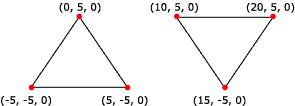

A triangle list is a list of isolated triangles. They might or might not be near each other. A triangle list must have at least three vertices. The total number of vertices must be divisible by three.
Use triangle lists to create an object that is composed of disjoint pieces. For instance, one way to create a force-field wall in a 3D game is to specify a large list of small, unconnected triangles. Then apply a material and texture that, together, appear to emit light to the triangle list. Each triangle in the wall appears to glow. The scene behind the wall becomes partially visible through the gaps between the triangles, as a player might expect when looking at a force field.
Triangle lists are also useful for creating primitives that have sharp edges and are shaded with Gouraud shading.
The following illustration depicts a rendered triangle list.
